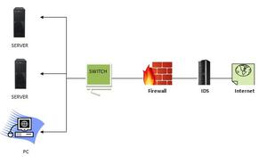
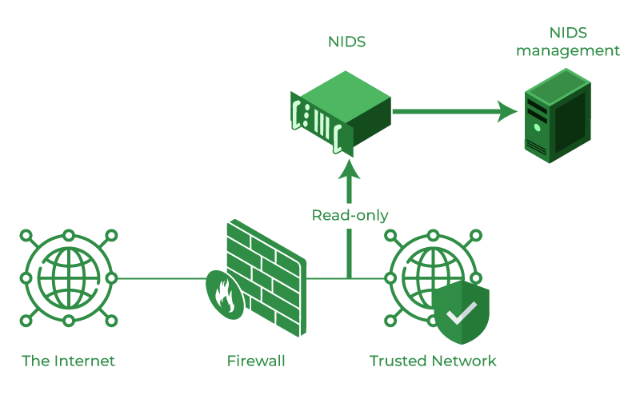
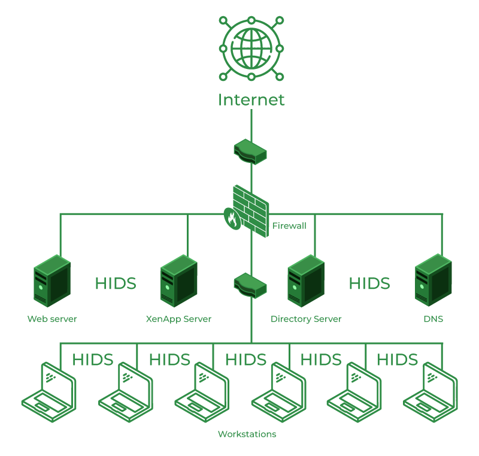

IDS
Intrusion Detection System (IDS)
A system called an intrusion detection system (IDS) observes network traffic for malicious transactions and sends immediate alerts when it is observed. It is software that checks a network or system for malicious activities or policy violations. Each illegal activity or violation is often recorded either centrally using a SIEM system or notified to an administration. IDS monitors a network or system for malicious activity and protects a computer network from unauthorized access from users, including perhaps insiders. The intrusion detector learning task is to build a predictive model (i.e. a classifier) capable of distinguishing between ‘bad connections’ (intrusion/attacks) and ‘good (normal) connections’.
How does an IDS work?
- An IDS (Intrusion Detection System) monitors the traffic on a computer network to detect any suspicious activity.
- It analyzes the data flowing through the network to look for patterns and signs of abnormal behavior.
- The IDS compares the network activity to a set of predefined rules and patterns to identify any activity that might indicate an attack or intrusion.
- If the IDS detects something that matches one of these rules or patterns, it sends an alert to the system administrator.
- The system administrator can then investigate the alert and take action to prevent any damage or further intrusion.
Classification of Intrusion Detection System
IDS are classified into 5 types:
- Network Intrusion Detection System (NIDS):Network intrusion detection systems (NIDS) are set up at a planned point within the network to examine traffic from all devices on the network. It performs an observation of passing traffic on the entire subnet and matches the traffic that is passed on the subnets to the collection of known attacks. Once an attack is identified or abnormal behavior is observed, the alert can be sent to the administrator. An example of a NIDS is installing it on the subnet where firewalls are located in order to see if someone is trying to crack the firewall. 
- Host Intrusion Detection System (HIDS):Host intrusion detection systems (HIDS) run on independent hosts or devices on the network. A HIDS monitors the incoming and outgoing packets from the device only and will alert the administrator if suspicious or malicious activity is detected. It takes a snapshot of existing system files and compares it with the previous snapshot. If the analytical system files were edited or deleted, an alert is sent to the administrator to investigate. An example of HIDS usage can be seen on mission-critical machines, which are not expected to change their layout. 
- Protocol-based Intrusion Detection System (PIDS):Protocol-based intrusion detection system (PIDS) comprises a system or agent that would consistently reside at the front end of a server, controlling and interpreting the protocol between a user/device and the server. It is trying to secure the web server by regularly monitoring the HTTPS protocol stream and accepting the related HTTP protocol. As HTTPS is unencrypted and before instantly entering its web presentation layer then this system would need to reside in this interface, between to use the HTTPS.
Application Protocol-based Intrusion Detection System (APIDS):An application Protocol-based Intrusion Detection System (APIDS) is a system or agent that generally resides within a group of servers. It identifies the intrusions by monitoring and interpreting the communication on application-specific protocols. For example, this would monitor the SQL protocol explicitly to the middleware as it transacts with the database in the web server.
Hybrid Intrusion Detection System:Hybrid intrusion detection system is made by the combination of two or more approaches to the intrusion detection system. In the hybrid intrusion detection system, the host agent or system data is combined with network information to develop a complete view of the network system. The hybrid intrusion detection system is more effective in comparison to the other intrusion detection system. Prelude is an example of Hybrid IDS.
Benefits of IDS
- Detects malicious activity:IDS can detect any suspicious activities and alert the system administrator before any significant damage is done.
- Improves network performance:IDS can identify any performance issues on the network, which can be addressed to improve network performance.
- Compliance requirements:IDS can help in meeting compliance requirements by monitoring network activity and generating reports.
- Provides insights:IDS generates valuable insights into network traffic, which can be used to identify any weaknesses and improve network security.
Detection Method of IDS
1. Signature-based Method:Signature-based IDS detects the attacks on the basis of the specific patterns such as the number of bytes or a number of 1s or the number of 0s in the network traffic. It also detects on the basis of the already known malicious instruction sequence that is used by the malware. The detected patterns in the IDS are known as signatures. Signature-based IDS can easily detect the attacks whose pattern (signature) already exists in the system but it is quite difficult to detect new malware attacks as their pattern (signature) is not known.
2. Anomaly-based Method:Anomaly-based IDS was introduced to detect unknown malware attacks as new malware is developed rapidly. In anomaly-based IDS there is the use of machine learning to create a trustful activity model and anything coming is compared with that model and it is declared suspicious if it is not found in the model. The machine learning-based method has a better-generalized property in comparison to signature-based IDS as these models can be trained according to the applications and hardware configurations.
Comparison of IDS with Firewalls
IDS and firewall both are related to network security but an IDS differs from a firewall as a firewall looks outwardly for intrusions in order to stop them from happening. Firewalls restrict access between networks to prevent intrusion and if an attack is from inside the network it doesn’t signal. An IDS describes a suspected intrusion once it has happened and then signals an alarm.
Conclusion:
Intrusion Detection System (IDS) is a powerful tool that can help businesses in detecting and prevent unauthorized access to their network. By analyzing network traffic patterns, IDS can identify any suspicious activities and alert the system administrator. IDS can be a valuable addition to any organization’s security infrastructure, providing insights and improving network performance.